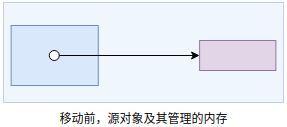
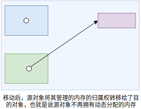

std::move
右值与右值引用
临时对象是一种右值；字面常量是一种右值。
右值不可以放在赋值号的左边，即右值不可以被赋值；不可以对右值取地址。
一个左值引用是某个对象的另一个名字。返回左值引用的函数，赋值，下标，解引用和前置递增/递减运算符都是返回左值的表达式的例子。注意：尽管常量无法改变，但是常量是一个左值。 右值引用是必须绑定到右值的引用。不能将一个右值引用绑定到一个左值上。返回非引用类型的函数，包括算术，关系，位及递增/递减运算符，都生成右值。我们不能将一个左值引用绑定到这类表达式上，但是可以将一个const的左值引用或一个右值引用绑定到这类表达式(返回右值的表达式)上。也就是说不能将左值引用绑定到一个右值上，但是可以将一个const的左值引用和一个右值引用绑定到右值上。 右值引用通常用于两种情况：模板转发其实参或模板被重载。
1 | int i = 42; |
由于右值引用只能绑定到临时对象，所以：
右值引用的对象将要销毁，且该对象没有其他用户。因此使用右值引用的代码可以自由地接管所引用的对象的资源。
变量是左值，可以把变量看做是只有一个运算对象而没有运算符的表达式，变量表达式都是左值。因此不能将一个右值引用绑定到一个变量上，即使这个变量是右值引用类型，也不行。
1 | int &&rr1 = 42; // 正确，rr1是一个右值引用类型的变量，绑定到一个右值42 |
标准库move函数
尽管不能将一个右值引用直接绑定到一个左值上，但是可以显式地将一个左值转换为对应的右值引用类型。通过调用标准库的move函数来获得绑定到左值上的右值引用。
1 | int &&rr1 = 42; |
move函数用在某些类的移动构造函数和移动赋值运算符函数中，帮助这些函数实现将资源从给定对象移动而不是拷贝到正在创建的对象中(参考c++primer11，p469)。
我们可以销毁一个移后源对象，也可以赋予它新值，但不能使用一个移后源对象的值。移后源对象必须可析构，并且移后源对象必须仍然是有效的。对象有效是指可以安全为其赋予新值或者可以安全地使用而不依赖其当前值。
move语义的几个疑问
strVec类
C++ Primer》中有关右值引用的例子，书中先是定义了一个类StrVec：
然后定义了一个移动构造函数：
1 | StrVec::StrVec(StrVec &&s) noexcept |
问：既然elements,first_free和cap都是指针，这里如何体现了一个对象被移动，难道这个函数难道不是仅仅复制了指针，这和一个只执行了浅拷贝的拷贝构造函数的作用有什么区别？
答：从上述代码中，可以看到，除了浅拷贝(从源对象那里拷贝指针)，还把源对象的指针清零了。浅拷贝是共享资源，而move是独占资源，浅拷贝因共享资源从而可能引发重复析构的问题，而move是独占则不会。具体而言，浅拷贝时，仅仅修改目的对象的成员指针，令它和源对象指向相同的堆内存，而move则会同时修改源对象和目的对象的成员指针，令目的对象指向源对象的堆内存，但是源对象却不再指向这块内存，从而实现了move从源对象处窃取资源。
问：如果把原对象的成员指针变量变为空指针，而原对象的析构函数会执行释放指针指向的资源的操作，运行的时候会不会出现错误。
1
2
3
4
5
6
7
8
9
10
11
12
13
14
15StrVec::~StrVec() {
free();
}
void StrVec::free() {
// free有两个责任: destory元素,释放StrVec自己分配的内存空间
// 不能给deallocate传一个空指针,因此若elements为空,就什么都不做
if (elements) {
// 逆序销毁元素
for (auto p = first_free; p != elements;) {
alloc.destroy(--p);
}
alloc.deallocate(elements, cap - elements);
}
}答：不会出现错误。根据前文的代码，释放前会判断elements是否为空指针，所以并不会出现错误。
容器
另外一个疑惑是和容器有关的。知乎上的一个问题的回答提到了这两个函数：
1 | void push_back( const T& value ); // (1) |
问：第二个版本的函数为什么能实现对象的移动，容器的存储空间难道不是Allocator分配的一段连续的内存空间，如果只是转移了对象持有资源的所有权，又怎么能保证容器中的存放的对象是在一片连续的内存空间上的？
答：标准中有明确说明两个版本的push_back并没有语义上的差别，都是在容器末尾追加value的副本。所以题目中声称的实现对象的移动是无稽之谈。
追加value的副本的过程传递的是对象的值而非对象本身。参数本身的左右值引用属性，决定了value的值是通过拷贝构造函数还是移动构造函数传递。问：vector重新申请的内容到底有没有被使用，应为没有复制不就意味着之前的内容依然保存在原内存上，而不能被释放。
答：上一个问题中提到传递的是对象的值，而非对象本身。也就是说，对于int这种内置类型来说，复制和移动没有区别；而对于std::string/std::vector来说，对象除了拥有它本身所占的内存(栈内存)，还拥有由它管理的动态分配出来的内存中的内容，移动相比复制会轻松。

上图是源对象，被移动前，左边是源对象本身所占的内存，右边是源对象管理的内存。

移动会从源对象那里窃取资源。移动完成后，源对象不再指向被移动的资源—这些资源的所有权已经归属目的 对象。移后源对象应该处于析构安全的状态，并且对象应该还是有效的。
补充几条
- move语义必须和RAll结合起来才能安全使用，因为move涉及到堆内存的管理权的转移，如果不RAll，多转移几次，你完全都不知道指针现在归谁管理了。
- move语义转移的move构造函数中指定的堆空间使用权，而不是对象，也就是说对于简单对象，比如int，即使对它使用move语义也是没用的。
- 问题中提到的顺序容器vector，使用move用处不大，因为最终它还是要使用拷贝语义来保证容器的内存顺序
一个例子说明对于使用连续内存空间的容器vector和list而言，移动的区别。
1 |
|
对于list
1 | void test1() { |
运行结果
1 | sizoef(A): 8 |
list每次分配一个元素的内存空间，并调用元素的移动构造函数构造一个对象，加入到链表中。
对于vector
1 | void test2() { |
运行结果
1 | sizoef(A): 8 |
vector要保证所有元素的内存地址连续，所以，每次分配一块内存。当加入新元素时，如果当前还有剩余空间，就把新元素直接加入到尾部，如果没有剩余空间，就需要进行扩容，扩容时会发生元素的拷贝。
参考文献
[1]如何理解C++中的move语义：https://www.zhihu.com/question/43513150
[2]C++ 11的移动语义：https://www.cnblogs.com/sunchaothu/p/11392116.html